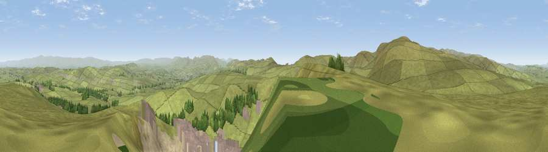

Long Fell
#3971 in England · top 15% of its area beats it · near GreenholmeWhere it is
The exact computed spot (NY 55777 08665). Click the marker for map links.
The view, rendered

A 360° render of this exact spot computed from the terrain model, tree cover and land cover — summer colours, afternoon light, calibrated against photographs of famous viewpoints. Real trees, hedges and buildings will differ in detail.
The panorama
Grey silhouette: terrain skyline in each direction (720 bearings, Earth curvature and refraction included). Dashed green: skyline with trees (+15 m) and buildings (+8 m) as obstacles. Blue strip: how far the ground is visible on each bearing.
Where the view opens
Wedge length = distance to the farthest visible ground on that bearing (vegetation-aware). Rings at 10, 25 and 50 km.
What fills the view
64% grassland · 22% bare ground · 9% built-up · 3% woodland · 2% water
Angular shares of the visible panorama (visual magnitude), not map area. Landscape diversity 0.45 (0–1 Shannon).
Key numbers
More beautiful places nearby
The staircase of upgrades: each row has a higher view potential than everything closer. Driving times are estimates from straight-line distance, calibrated against real road routing — check an actual route before setting out.
| Place | Direction | Drive | Score |
|---|---|---|---|
| Viewpoint near Sadgill | W · 3 km | ~7 min | 73.1 |
| Viewpoint near Sadgill | WSW · 3 km | ~8 min | 75.7 |
| Ashstead Fell | S · 6 km | ~13 min | 76.3 |
| Viewpoint near Garnett Bridge | SSW · 6 km | ~13 min | 77.6 |
| Kentmere Pike | W · 9 km | ~18 min | 78.7 |
| Viewpoint near Sadgill | W · 10 km | ~19 min | 79.7 |
| Viewpoint near Bampton | WNW · 11 km | ~20 min | 80.4 |
| High Street (summit) | WNW · 12 km | ~22 min | 82.6 |
54.47141, -2.68387 · source: osm peak · position refined by local search. Computed location — check access rights before visiting.